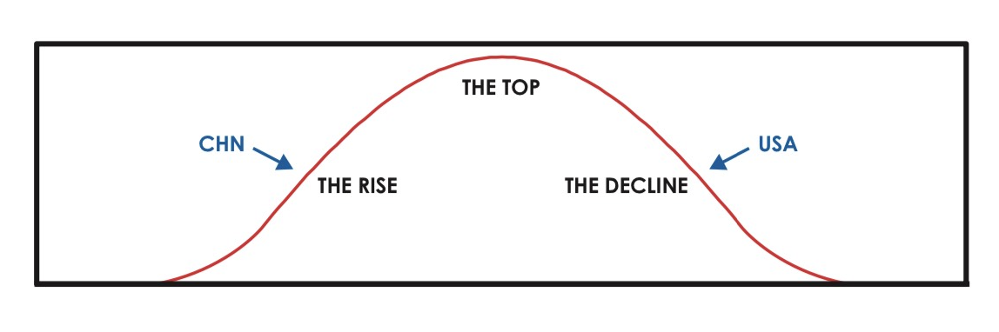
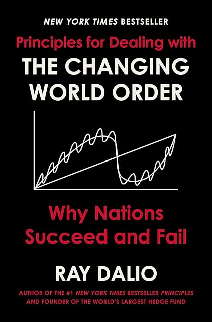

(Audio) Principles for dealing with the changing world order, by Dalio
Sunday August 25, 2024
Ray Dalio likes gold, doesn't like when money printer go brrr, and does like China. He also likes Kissinger and Genghis Khan. Dalio says some reasonable and some interesting things, but it isn't clear he practices what he preaches, or that he's right.

Dalio has a bunch of signals and a framework of big cycles organizing history. It's a little bit psychohistory and a little bit cycle-finding. For Dalio, the biggest cycle is the debt cycle, followed by cycles of internal disorder and external disorder. He describes money as starting from metal, then notes exchangeable for metal, then fiat money.

For Dalio, the step after fiat money is collapse. He cares a lot about whether a currency is The Reserve Currency. Combining his signals, he gets charts that show the rise and fall of the Dutch guilder, the British pound, and (soon) the US dollar. China is ascendant, never mind that their currency has been fiat longer than the dollar.
Dalio says he's identifying timeless principles of cause and effect. Is he right? Historical causality is hard to test, but there are at least a few problems with Dalio's claims.
For most of history, the idea of a reserve currency hasn't really made sense. The modern monetary system is in this light novel, not timeless. Dalio has a narrow understanding of money compared to the anthroplogical view in Debt: The First 5,000 Years, for example.
It's hard to find falsifiable predictions in Dalio's science. He admits to not having good tools for predicting when any given thing might happen. In this sense, his whole system is basically noticing that things have fallen apart in the past and concluding that things could fall apart in the future. It isn't even wrong.
Looking at the charts, I'm reminded of a common tension in data work: Is data leading to theory, or is theory leading to data? Data can be found to support most theories; what was the process here? It's rather easy to imagine that Dalio's employees are skilled in finding what he thinks is there.
Not that Dalio hasn't looked at history and so on. The Patriot movement in the Netherlands does kind of feel like it rhymes with MAGA energy. He knows about triangular debt in China. He's even concerned about inequality, though mostly because it can lead to wealth-destroying crises.
Does Dalio have the courage of his convictions? Perhaps not. He frequently comes off as defensive, and digresses substantially into his concerns about public scrutiny of the prominent. The historical theory he seems to hold most instinctively is a great man theory in which he and the people he talks to are great; he sounds like Trump talking about how he knows the best people.
If you think your ideas are timeless, you may be right about what happens next, but you probably won't predict things that have never happened before. So Dalio is limited to predicting rearrangements of the world order, not substantially new things. If Marx thought much change was inevitable, Dalio thinks real change is fundamentally impossible, that recurrence is the nature of society.
So Dalio picks China as the new king of the hill.
I'm curious about many of the things Dalio talks about. What causes what in the world? How do we operate in reality? What lessons can we learn from history? I have to think Dalio believes he's sincere about his program. At the same time, reporting suggests his ability to follow his own advice is as constrained as his ability to imagine a better world. For all the lip service to evolution, Dalio doesn't seem to be its exemplar.
